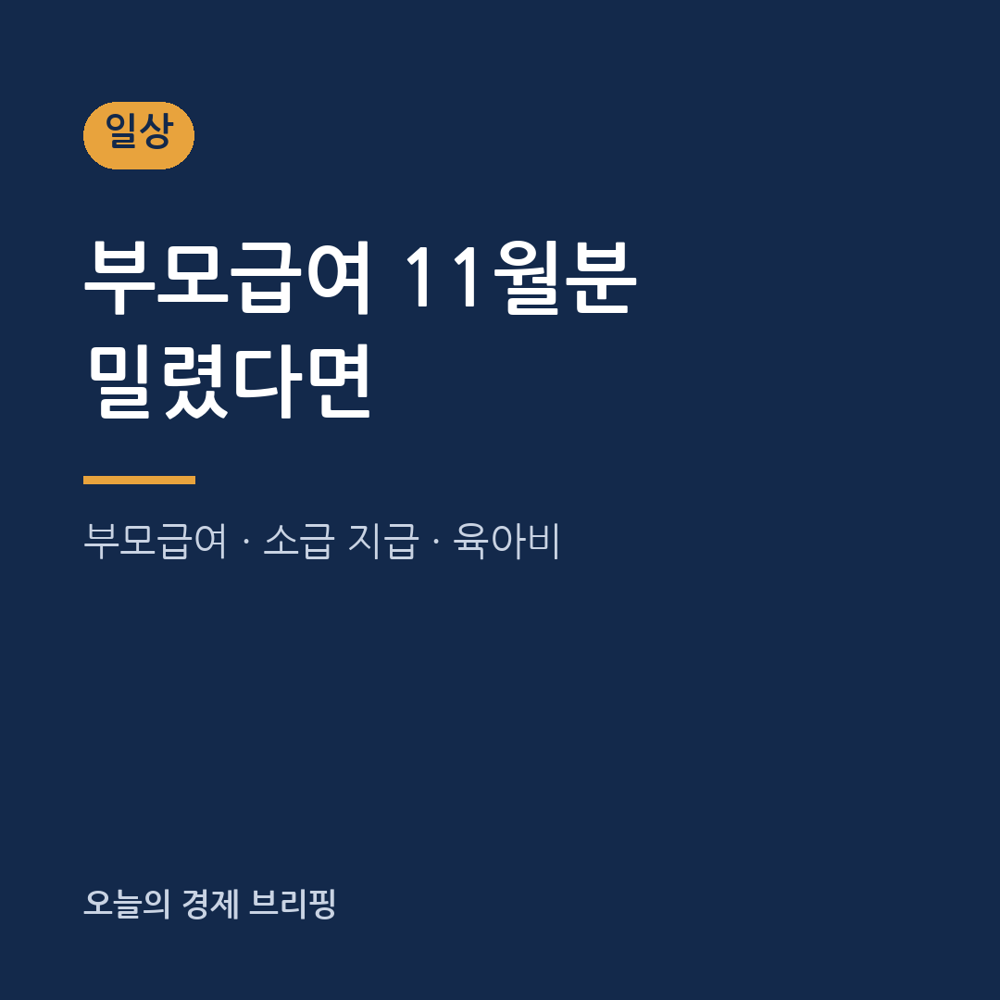
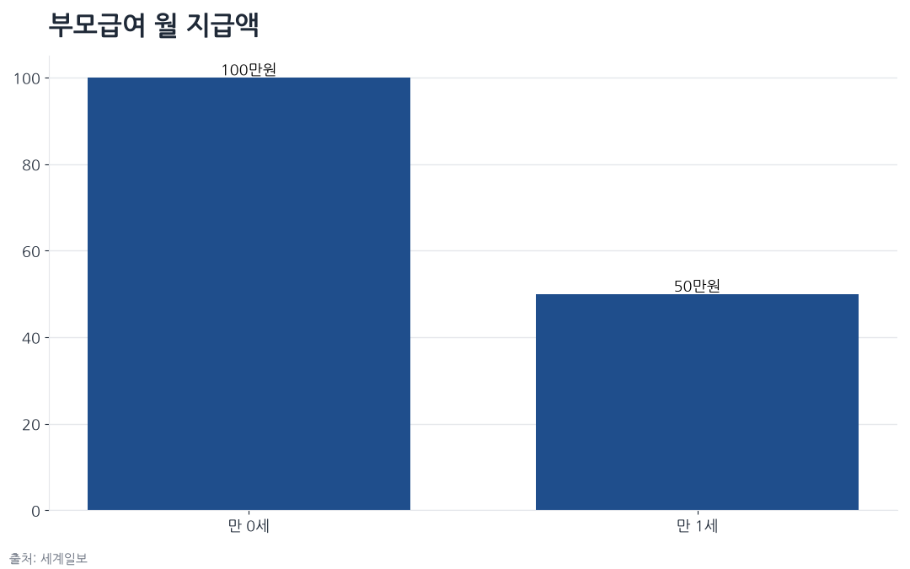

2026-11-25-1751-naver 발행 키트 · 이 페이지는 검색에 노출되지 않습니다.
제목
카테고리
일상태그
본문 (그림·표 포함)
휴대폰 블로그 앱에서는 그림이 같이 붙지 않을 수 있어요. 그때는 [글자만 복사] 후 아래 이미지를 저장해 [그래프1]·[표1] 자리에 첨부하세요.

오늘이 25일이라 통장을 확인해 보신 분들 많을 거예요. 아이 키우는 집에서는 이 날짜가 월급날만큼 중요하잖아요.
그런데 올해 11월분 부모급여가 제때 안 들어온 지역이 있다는 소식이 전해졌어요. 해당되는 분이라면 일단 놀라지 마시고, 아래 내용부터 차근차근 살펴보세요.
▶ 부모급여가 뭐였더라?
부모급여는 0세, 1세 아이를 키우는 가정에 매달 현금으로 주는 지원금이에요. 만 0세는 월 100만원, 만 1세는 월 50만원이고, 정해진 지급일은 매달 25일이에요.
분유, 기저귀, 이유식처럼 매달 나가는 고정 지출을 여기서 쓰는 집이 많다 보니, 하루 이틀만 늦어져도 체감이 커요.

▶ 어디서 밀렸나요?
보도에 따르면 경기도 일부 시(파주, 광명, 안양, 남양주 등)와 대구 동구, 경남 양산 등에서 지연이 확인됐어요. 다른 지역도 있을 수 있어서 우리 동네 상황은 직접 확인해 보셔야 해요.
이유는 지역마다 조금씩 달라요. 경기도 보조금이 늦게 내려왔거나, 보건복지부의 예산 집행이 늦어졌거나, 지자체 자체 예산이 모자랐다는 설명이 나왔어요.
▶ 밀린 돈은 언제 받나요?
다행히 못 받는 건 아니고 나중에 한꺼번에 받는 방식이에요. 다만 시기가 지역마다 달라서 표로 정리해 봤어요.
11월분 부모급여 지급 지연 지역과 소급 시기
| 지역 | 안내된 소급 지급 |
|---|---|
| 경기도 | 12월에 11월분·12월분 2개월치 합산 |
| 대구 동구 | 12월에 11월분 소급 |
| 경남 양산 | 다음 달 소급 |
| 일부 지역 | 내년 1월 일괄 지급 |
출처: 세계일보
경기도는 12월에 11월분과 12월분을 합쳐서 두 달 치를 준다고 해요. 일부 지역은 내년 1월에 몰아서 지급하겠다고 안내했다고 하니, 문자를 꼼꼼히 읽어 보세요.
▶ 이번 달 생활비, 이렇게 버텨 보세요
돈이 늦게 들어오는 동안 할 수 있는 일을 몇 가지 적어 볼게요.
첫째, 거주지 주민센터나 시·군·구청 복지 담당 부서에 전화해서 정확한 지급 날짜를 물어보세요. 문자로 받은 안내와 실제 일정이 다를 수도 있거든요.
둘째, 이번 달 고정 지출 중 미룰 수 있는 것과 없는 것을 나눠 보세요. 분유와 기저귀처럼 꼭 필요한 것부터 챙기고, 나머지는 소급 지급 이후로 미루는 식으로요.
셋째, 지급 안내 문자는 지워지지 않게 캡처해 두세요. 나중에 금액이 맞는지 대조할 때 쓸 수 있어요.
▶ 장 보러 가실 분은 이것도 참고하세요
같은 날 전해진 소식으로, 기업회생 절차 중인 홈플러스가 27일부터 전 점포 영업을 임시로 멈춘다는 보도가 나왔어요. 상품을 사 올 자금이 부족한 탓이라고 해요.
육아용품을 홈플러스에서 사 오던 분이라면 27일 전에 미리 사 두시거나, 다른 마트·온라인몰을 알아 두는 게 좋겠어요. 점포별 상황은 달라질 수 있으니 방문 전에 공지를 확인하세요.
▶ 한 줄 정리
부모급여는 못 받는 게 아니라 늦게 받는 것이니, 우리 지역 지급일만 정확히 확인해 두세요.
혹시 우리 동네는 어떻게 안내받으셨나요? 댓글로 알려 주시면 다른 부모님들께도 도움이 될 거예요.
출처 (본문 맨 아래에 붙여넣기 권장)
- 세계일보, “당장 분유·기저귀 값 어쩌나”…부모급여 밀린 육아 가정 분통, https://www.segye.com/newsView/20261125513523 - 세계일보, 홈플러스, 27일부터 전 점포 임시휴업…"상품 매입자금 부족", https://www.segye.com/newsView/20261125513425